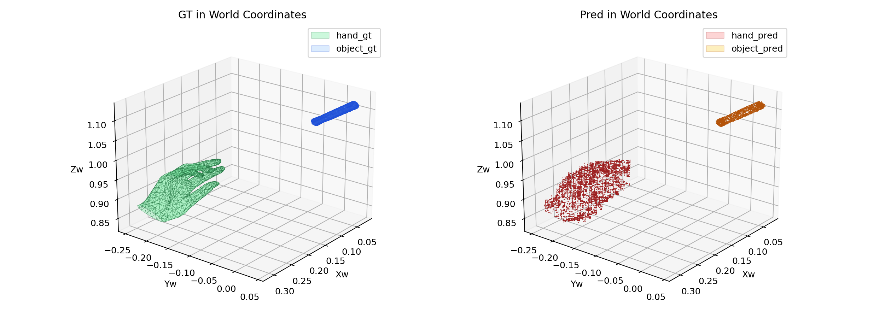
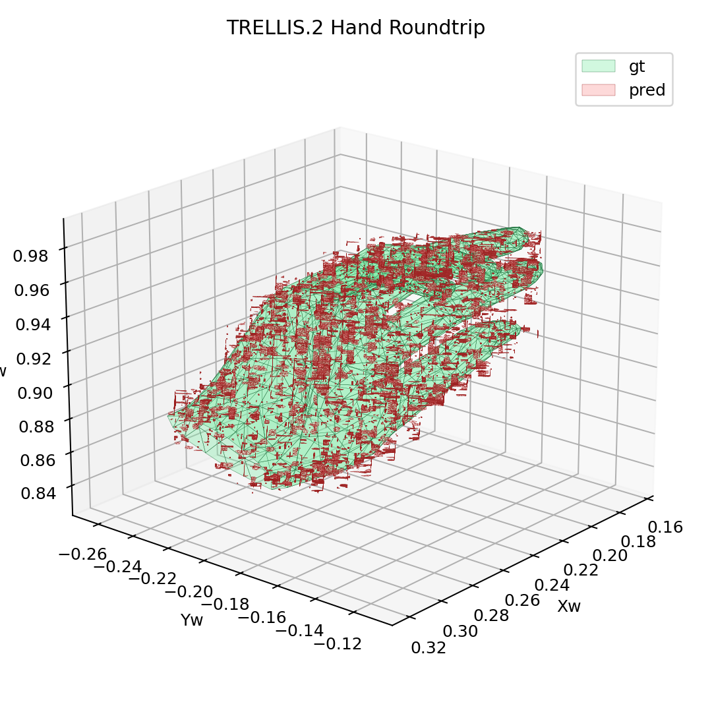
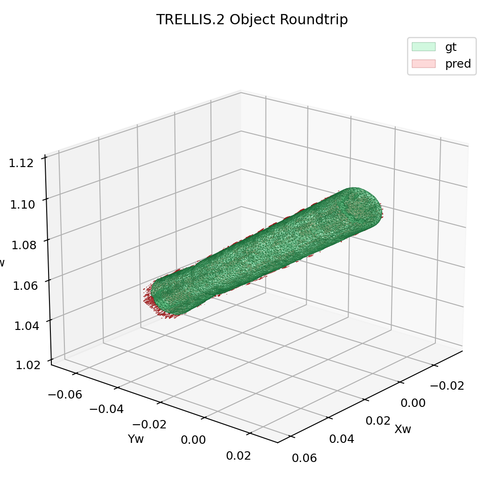
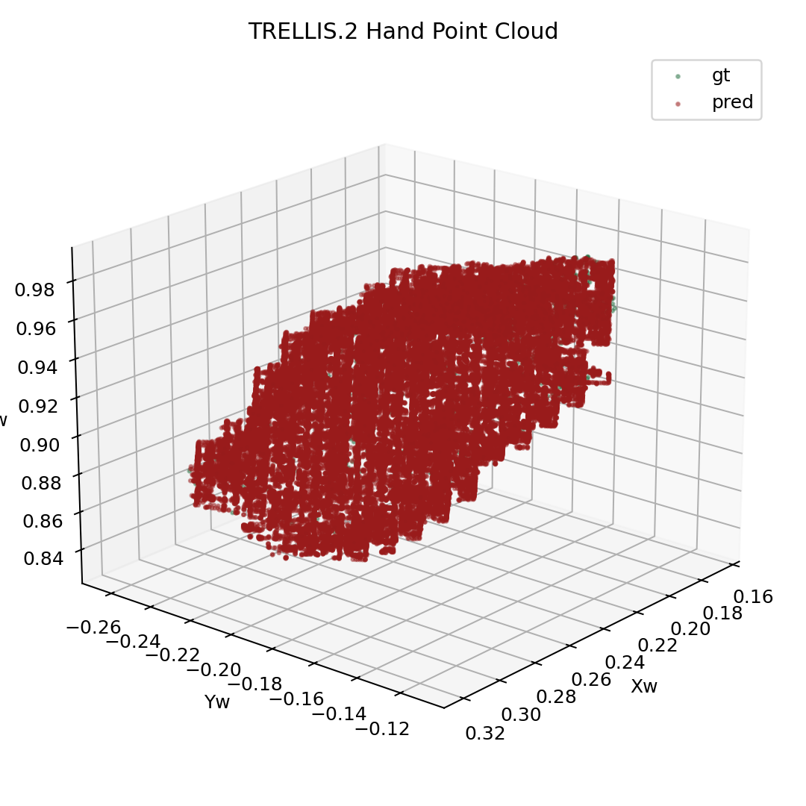
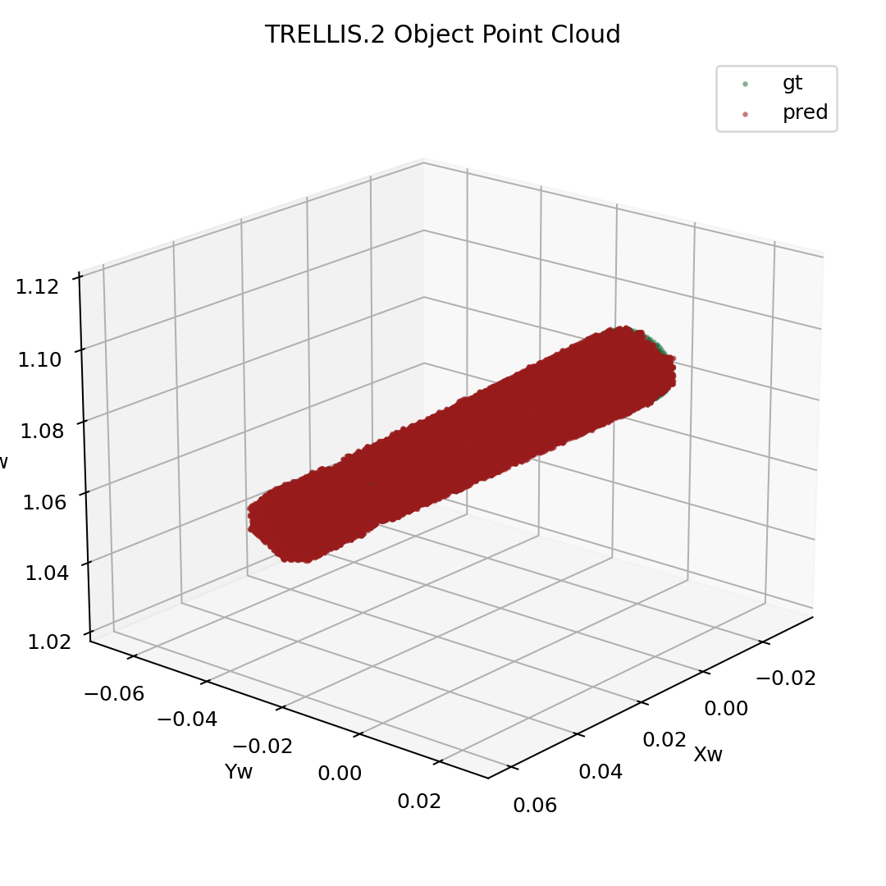
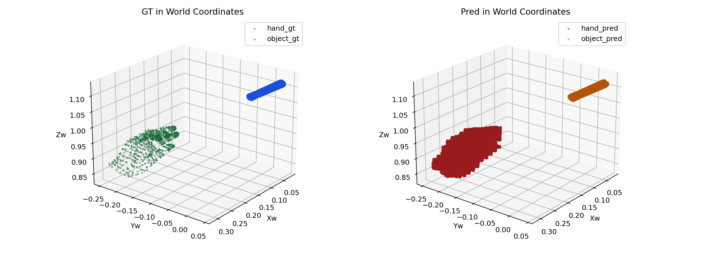

Experiment goal
在同一条 DexYCB frame-30 TRELLIS.2 shape roundtrip 上补充 point-cloud 导出，并把本次实际使用的代码路径和权重路径写入实验记录与公开页面。
rerun succeeded, emitted point-only PLY/PNG artifacts, and recorded the exact code + weight paths used for the run. Official encoder/decoder weights are reused, but the end-to-end HOI path is still custom HOI3R code rather than the official image-to-3D pipeline
在同一条 DexYCB frame-30 TRELLIS.2 shape roundtrip 上补充 point-cloud 导出，并把本次实际使用的代码路径和权重路径写入实验记录与公开页面。
PASS with explicit provenance。现在实验记录和页面里可以直接看到这次运行到底调用了哪些代码、哪些权重，同时 point-cloud 视角也已经补齐，后续判断“mesh 面片看起来差”时不会只被 wireframe 视图干扰。

Ground-truth and reconstructed hand-object scene layout in world coordinates.

Hand vertex distribution in world coordinates.

Object vertex distribution in world coordinates.

Experiment artifact mirrored into the public asset bundle.

Experiment artifact mirrored into the public asset bundle.

Experiment artifact mirrored into the public asset bundle.